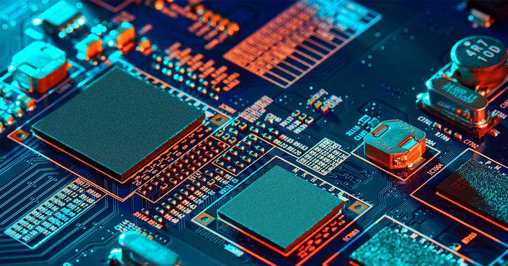

Here are some FAQs
- What is a CPU? A CPU also known as a A central processing unit is essentially the brain of the computer.
- What is the purpose of a CPU in a computer? The purpose of the cpu is to execute instructions provided from the software and manage other hardware.
- What is the difference between a CPU and a GPU? A gpu is used to render graphics and the cpu is designed to execute a wide range of task.
- What is clock speed and how does it affect CPU performance? determines how quickly the CPU can retrieve and interpret instructions.
- What is the difference between single-core and multi-core CPUs? A single core cpu can only handle one instruction at a time while multi core cpus can handle heavy work loads.
- What is overclocking and how does it affect CPU performance? increasing the processor's clock rate the speed at which the CPU works to perform calculations above the manufacturer's specifications.
Images


Top Cpu Manufacturers
The top CPU manufacturers are Intel and AMD. Who are Intel and AMD you might ask. Intel is a technology company that design and manudacture cpus and other related hardware/software products. Intel was founded in 1968, and have been a dominant player in the computer industry. AMD is a company that design and manufacture cpu, gpu, and other related computer parts. Only founded a year later than Intel, amd have been know for gaming and high end computer parts. AMD is know for their innovative and high performance Ryzen and Radeon product.